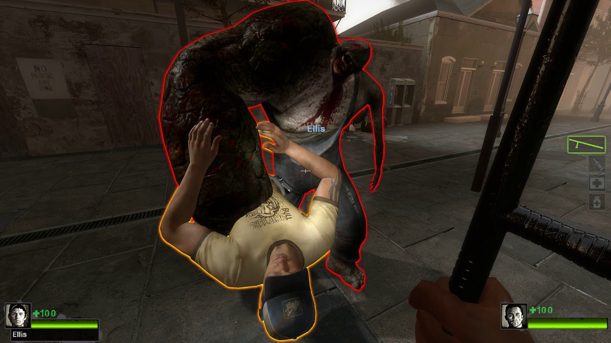
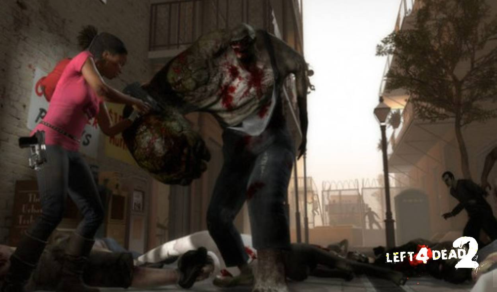

El Charger como infectado especial apareció en Left 4 Dead 2. Esto conlleva a la primera aparición del Charger después del origen de la gripe verde y los sucesos del primer juego.
Lo que vuelve único a este infectado es la habilidad que tiene para embestir a los sobrevivientes. El Charger suelta un grito antes de abalanzarse al grupo a toda velocidad. Muchas veces sus ataques llegan a ser sorpresas al ocultarse su grito entre el sonido de los disparos y los gruñidos que sueltan los infectados.
Su embestida aumenta la velocidad del Charger y al impactar con los sobrevivientes los arrastra hasta topar con pared. Una vez los sobrevivientes fueron embestidos por el infectado y toparon con pared el Charger procederá a azotarlos en el suelo de forma repetida. Individualmente los sobrevivientes no tienen manera de soltarse del Charger dejando su salvación en manos de sus compañeros.

Se podría confundir al Charger con el infectado Tank debido al ser de un ancho considerablemente extenso. El distintivo del Charger es el gran brazo que tiene el Charger como las mutaciones en sus piernas. En cuestión de su vestuario antes de ser un infectado especial se le ve con un overol azul que aún porta cómo infectado.

La debilidad del Charger mayormente es su propia habilidad de embestir a los sobrevivientes. Si el grito del Charger se logra distinguir entre todo el estruendo que hay en la pelea en contra de los infectados o se logra divisar a la distancia basta simplemente con hacerse a un lado para dejar que el infectado pase sin hacer daño a ningún sobreviviente. Al topar con pared y no llevar a algún sobreviviente entre sus manos el infectado estará aturdido por unos instantes, esta es la oportunidad perfecta para atacar al Charger, además no puede embestir al instante de ya no esta aturdido. El Charger podría ser el 2 infectado más fácil de matar por debajo del Smoker.
Debido a la mutación que muestra el infectado especial se ha teorizado que el Charger antes de infectarse era una persona que podría haberse roto el brazo o tener una herida en aquella parte de su cuerpo. Otras teorías indican que debido a las deformaciones que presenta por todo su cuerpo algunas personas creen que su origen viene de una persona con síndrome de down, en esta entrada no se aprueba la última teoría y se le da más validación a la que proclama que sufrió una herida en su brazo.